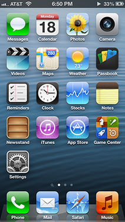

iOS 6
O iOS 6 é o sexto maior lançamento do sistema operacional móvel iOS desenvolvido pela Apple , sendo o sucessor do iOS 5 . Foi anunciado na Worldwide Developers Conference da empresa em 11 de junho de 2012 e foi lançado em 19 de setembro de 2012. Foi sucedido pelo iOS 7 em 18 de setembro de 2013.
O iOS 6 adicionou um novo aplicativo da Apple Maps , substituindo o Google Maps como o serviço de mapeamento padrão para o sistema operacional; um aplicativo dedicado Podcasts, como um local central para podcasts ; e um aplicativo do Passbook , para gerenciar diferentes tipos de bilhetes, cartões de embarque, cupons e cartões de fidelidade. A App Store recebeu uma revisão visual, trazendo um layout de aplicativo baseado em cartão, bem como ajustes para pesquisar algoritmos. O Facebook
foi integrado ao sistema operacional, incorporando mensagens de status,
como botões, e sincronização de contatos e eventos para vários
aplicativos da Apple.
Novos controles de privacidade permitem que os usuários tenham
permissões de aplicativos mais refinadas, além de uma opção para impedir
a publicidade segmentada. O Siri
foi adicionado a mais dispositivos e atualizado com mais
funcionalidades, incluindo a capacidade de fazer reservas em
restaurantes, lançar aplicativos, recuperar resenhas de filmes e
estatísticas de esportes e ler itens do Centro de Notificação.
A recepção do iOS 6 foi positiva.
Os críticos notaram que o sistema operacional não oferece melhorias
significativas de velocidade ou grandes elementos reformulados, mas
focados em refinamentos, com um consenso geral de que a Apple "não está revisando as coisas por causa disso".
O iOS 6 não "mudou completamente a maneira como você usa o seu
dispositivo", mas "cada um dos ajustes fará [...] muitas ações diárias
no smartphone mais fáceis", e os críticos notaram que o refinamento de
"algo que já funciona" extremamente bem "é" algo que outras empresas
fariam bem em emular ".
O lançamento do Apple Maps, no entanto, atraiu críticas significativas, devido a dados imprecisos ou incompletos. Os problemas levaram a uma carta aberta de desculpas do CEO da Apple, Tim Cook , e tiveram um papel na demissão de Scott Forstall da empresa, que supervisionou o desenvolvimento do iOS desde o início.
Embora o iOS 6 não tenha mais atualizações desde março de 2014, duas
subversões do iOS 6 ainda são 'assinadas' pela Apple Software Update:
6.1.3 para certos modelos do iPad 2 e iPhone 4S e 6.1.6 para o iPhone 3GS e o iPod Touch (4ª geração) , o que significa que ele pode ser verificado e instalado nos dispositivos mencionados, desde que o usuário tenha o arquivo IPSW necessário.

Desenvolvedor Apple Inc.
Modelo de origem Fechado , com componentes de código aberto
lançamento inicial 19 de setembro de 2012
Último lançamento 6.1.6 (10B500) / 21 de fevereiro de 2014
Tipo de kernel Híbrido ( XNU )
Licença EULA proprietário, exceto para componentes de código aberto
Antecessor iOS 5
Sucessor iOS 7
iOS 6 rodando em um iPhone 5
Introdução e lançamento inicial
O iOS 6 foi apresentado na Apple Worldwide Developers Conference em 11 de junho de 2012.
iOS 6 foi lançado oficialmente em 19 de setembro de 2012.
Atualizações
6.0.1
O iOS 6.0.1 foi lançado em 1 de novembro de 2012, como a primeira atualização para o iOS 6. Ele incluiu correções de bugs.
6.0.2
O iOS 6.0.2 foi lançado exclusivamente para o iPhone 5 e iPad Mini em 18 de dezembro de 2012, para corrigir problemas de Wi-Fi.
6.1
O iOS 6.1 foi lançado em 28 de janeiro de 2013. A atualização incluía compatibilidade LTE para mais operadoras em todo o mundo, integração com Siri e Fandango
para permitir que os usuários comprassem ingressos de cinema por voz
(apenas EUA) e uma configuração "Redefinir identificador de publicidade"
em Configurações , permitindo aos usuários maior controle sobre como os
aplicativos rastreiam seu uso.
6.1.1
O iOS 6.1.1 foi lançado em 11 de fevereiro de 2013, especificamente para o iPhone 4S , com correções para problemas que poderiam afetar o desempenho e a estabilidade do celular.
6.1.2
O iOS 6.1.2 foi lançado em 19 de fevereiro de 2013, com uma correção para um bug de calendário do Exchange que poderia afetar a atividade da rede e a vida útil da bateria.
6.1.3
O iOS 6.1.3 foi lançado em 19 de março de 2013, com correções de bugs,
incluindo correção de um possível método de bloqueio de tela de bloqueio
e várias melhorias.
6.1.4
O iOS 6.1.4 foi lançado em 2 de maio de 2013, especificamente para o iPhone 5 com um "perfil de áudio atualizado para alto-falante".
6.1.5
O iOS 6.1.5 foi lançado em 14 de novembro de 2013, especificamente para
a quarta geração do iPod Touch, com uma correção para falhas no FaceTime.
6.1.6
O iOS 6.1.6 foi lançado em 21 de fevereiro de 2014, especificamente para a quarta geração do iPod Touch e iPhone 3GS , com correções para verificação de conexão SSL. Foi também a última versão do iOS suportada por esses dispositivos.
Recursos do sistema
Siri
O assistente pessoal inteligente Siri da Apple, introduzido no iOS 5 com o lançamento do iPhone 4S
, foi atualizado para incluir reservas em restaurantes, lançar
aplicativos, ler itens do Notification Center, ditar atualizações do Facebook e do Twitter , recuperar resenhas de filmes, esportes detalhados estatísticas e muito mais.
A Siri recebeu suporte de idiomas para italiano , coreano e cantonês , e suporte a dispositivos para iPhone 5 , iPod Touch de quinta geração e iPad de terceira geração.
No iOS 6.1, a Siri foi integrada ao Fandango , permitindo que os usuários comprem ingressos de cinema por voz. O recurso estava disponível apenas nos Estados Unidos no lançamento.
Integração do Facebook
O Facebook
veio integrado em vários aplicativos nativos da Apple com iOS 6. Os
recursos do Facebook podem ser acessados diretamente de aplicativos
nativos, como o Calendar, que pode sincronizar eventos do Facebook; Contatos, que podem mostrar informações de amigos no Facebook; e a App Store e o Game Center , que tinham o botão do Facebook; bem como através de um widget no Centro de Notificação, que permitia aos usuários postar atualizações de status na rede social.
Configurações
O aplicativo Configurações recebeu várias alterações no iOS 6. O ícone
foi revisado para corresponder ao ícone Preferências do sistema usado no
sistema operacional do computador OS X, então denominado, desenvolvido pela Apple; e um modo "Não perturbe" foi adicionado, o que permite aos usuários desativar os sons do telefone.
Opções adicionais para o modo Não Perturbe incluem a possibilidade de
permitir chamadas telefônicas de um grupo específico de contatos e
permitir o som na segunda chamada, se alguém ligar repetidamente. Um ícone de lua crescente aparecerá na barra de status quando o modo Não perturbe estiver ativado.
Novas configurações de privacidade ficaram disponíveis para os usuários.
Além dos "Serviços de Localização", os seguintes menus foram
adicionados no iOS 6: "Contatos", "Calendários", "Lembretes" e "Fotos".
Os menus de privacidade atualizados permitem aos usuários controles de
permissão de privacidade mais refinados para cada aplicativo, com novas
notificações quando os aplicativos querem acesso a informações em cada
uma das categorias.
O iOS 6 também veio com uma configuração de controle de usuário
"Limitar o rastreamento de anúncios" para permitir aos usuários a opção
de impedir a publicidade segmentada .
O "Identificador de publicidade" da Apple foi descrito pela Apple como
"um identificador de dispositivo não-permanente e não pessoal, que as
redes de publicidade usarão para ter mais controle sobre a capacidade
dos anunciantes de usar métodos de rastreamento. Se você optar por
limitar o rastreamento de anúncios, O Identificador de publicidade pode
não reunir mais informações para exibir seus anúncios segmentados. "
No iOS 6.1, uma configuração "Redefinir identificador de publicidade"
foi adicionada para permitir que os usuários redefinissem o
identificador usado pelas empresas de publicidade.
Outro
O iOS 6 adicionou um widget do Twitter no Notification Center, onde os usuários podiam twittar sem entrar no aplicativo. Isso economizou recursos.
A interface da Folha de Compartilhamento foi atualizada para exibir uma
grade de ícones, em oposição a uma lista, de diferentes aplicativos
para os quais os usuários poderiam compartilhar conteúdo.
Recursos do aplicativo
Mapas
Um novo aplicativo do Apple Maps substituiu o Google Maps como o aplicativo de mapeamento padrão no sistema operacional. O Apple Maps usava o mecanismo baseado em vetores da Apple, facilitando o zoom . A novidade no Maps era a navegação curva-a-curva
com direções faladas e visualizações 3D em alguns países, visualizações
"Flyover" em algumas cidades principais e tráfego em tempo real.
No lançamento, a navegação passo-a-passo estava disponível apenas para iPhone 4S e posterior, e iPad 2
(capacidade celular necessária) e posterior, enquanto a exibição
"Flyover" estava disponível apenas para iPhone 4S e posterior, iPod Touch de quinta geração e iPad 2 e posterior.
Caderneta de Cadernos
Um novo aplicativo do Passbook foi adicionado, para recuperar documentos como cartões de embarque , ingressos para admissão , cupons e cartões de fidelidade.
Um dispositivo iOS com caderneta pode substituir um cartão físico quando digitalizado para processar um pagamento móvel nos locais participantes.
O aplicativo possui recursos de reconhecimento de contexto, como
notificações de cupons relevantes, quando na vizinhança imediata de uma
determinada loja, e visibilidade automática de cartões de embarque
quando o usuário está em um aeroporto, com notificações de alterações de
gate.
Fotos e Câmera
O aplicativo Câmera foi atualizado para incluir um novo modo Panorama
que permitia aos usuários tirar fotos panorâmicas de 240 graus.
O aplicativo Fotos recebeu atualizações da funcionalidade do Photo
Stream, permitindo que os usuários removam imagens, além de compartilhar
Photo Streams personalizados com outras pessoas ou com o público.
App Store
A App Store
no iOS 6 tinha uma nova interface de usuário que removeu a guia
"Categorias" e a substituiu por "Genius", o mecanismo de pesquisa e
recomendação da Apple. Ele também fez uso de cartões em vez de listas para apresentar aplicativos.
Houve também ajustes no algoritmo de busca da App Store, resultando em
uma "tendência de favorecer as empresas mais novas", o que provocou
preocupações e elogios dos desenvolvedores.
A App Store também atualizou aplicativos sem exigir a senha do iTunes e, ao instalar ou atualizar um aplicativo, os usuários não retornaram automaticamente para a tela inicial.
Telefone
Ao receber chamadas, o iOS 6 permitiu que os usuários passassem a tela
de bloqueio para revelar "Responder com mensagem" ou "Lembrar-me
depois".
O recurso "Responder com mensagem" mostra várias mensagens
pré-determinadas com uma opção para uma mensagem personalizada, enquanto
o recurso "Lembrar mais tarde" oferece várias opções (como uma hora
depois, quando o usuário chega em casa ou quando o usuário sai a
localização atual) para ativar um lembrete.
Podcasts
A funcionalidade Podcast foi separada do aplicativo iTunes e recebeu
seu próprio aplicativo Podcasts no iOS 6, para "centralizar e promover a
escuta e o download de podcasts para os usuários".
Safari
O navegador da Web Safari foi atualizado com uma visualização em tela cheia para usuários de iPhone e iPod Touch.
A Lista de Leitura, um recurso apresentado no iOS 5 , recebeu suporte offline, no qual texto, imagens e layout de artigos salvos são armazenados no dispositivo do usuário.
FaceTime
A videochamada do FaceTime foi atualizada para funcionar em uma conexão de celular , além do Wi-Fi.
Relógio
O aplicativo Clock , que estava no iPhone e no iPod Touch desde o lançamento original, ficou disponível no iPad. O design do relógio parecia semelhante a um relógio suíço , e a Apple formou um acordo com a Swiss Federal Railways para licenciar o projeto para seu próprio uso.
Funcionalidade removida
O aplicativo do YouTube , que era um aplicativo padrão no iOS desenvolvido pela Apple, foi removido. A Apple disse ao The Verge que o motivo da remoção foi devido a uma licença expirada, mas que os usuários do YouTube ainda podiam ver vídeos através do navegador Safari . A empresa também confirmou que o Google , que é dono do YouTube, estava desenvolvendo seu próprio aplicativo, com o lançamento da App Store. O aplicativo do YouTube, desenvolvido pela Apple, permaneceu no iOS 5 e nas versões anteriores do iOS. Em junho de 2017, o ex-funcionário do YouTube, Hunter Walk, twittou que a Apple entrou em contato com o YouTube para torná-lo um aplicativo padrão no iPhone original para garantir o lançamento móvel do serviço de compartilhamento de vídeos, mas exigiu o próprio desenvolvimento.
Em 2012, o YouTube tomou a decisão de descontinuar a licença em um
esforço para "retomar o controle de nosso aplicativo", desenvolvendo-se
por conta própria.
Recepção
A recepção do iOS 6 foi positiva. Dan Seifert do The Verge
escreveu que "iOS 6 parece quase idêntico ao iOS 5. Há alguns ajustes
sutis aqui e ali [...] Mas para cada pequena mudança na aparência dos
detalhes do iOS, há dez coisas que permanecem como mesmo." Apesar de elogiar o iPhone 4S
por ser um "artista mal-humorado", ele observou que "quando se trata de
velocidade, o iOS 6 não se sente muito diferente do iOS 5". Craig Grannell, da TechRadar, escreveu que "o iOS 6 é como o iPhone 5 ou o OS X Mountain Lion
- o refinamento de algo que já funciona muito bem. A Apple não está
revisando as coisas por causa disso. , tornando a experiência do iOS
gradualmente melhor. Isso em si é algo que outras empresas fariam bem em
imitar ". Jason Parker da CNET
escreveu que "o iOS 6 é uma atualização bem-vinda para qualquer usuário
do iOS, mas não mudará completamente a maneira como você usa seu
dispositivo. Em vez disso, cada um dos ajustes fará várias ações diárias
do smartphone mais fáceis a placa e oferecer algum alívio para aqueles
que esperam por certos recursos (envio de imagens de e-mail e controles
de chamadas, por exemplo). "
Problemas
Lançamento do aplicativo do Google Maps
No iOS 6, a Apple substituiu o Google Maps por seu próprio Apple Maps
como serviço de mapeamento padrão do sistema operacional e
imediatamente enfrentou críticas por dados imprecisos ou incompletos,
incluindo um museu em um rio, cidades perdidas, imagens de satélite
obscurecidas por nuvens, desaparecidos lugares locais e muito mais.
O CEO da Apple, Tim Cook, publicou uma carta no site da Apple pedindo desculpas pela "frustração causada pelo aplicativo Maps", e recomendou o download de aplicativos de mapas alternativos da App Store. Scott Forstall
, o então vice-presidente de engenharia de software do iOS, foi
involuntariamente demitido de seu cargo na Apple em outubro de 2012,
depois que ele "se recusou a assinar seu nome com uma carta pedindo
desculpas pelo novo serviço de mapeamento da Apple".
Identificador de publicidade ceticismo de privacidade
Em setembro de 2012, Sarah Downey, uma "especialista em privacidade" da
empresa de software Abine expressou sua preocupação de que, apesar do
novo "Identificador de Propaganda", a Apple não divulgou detalhes sobre o
que o identificador realmente baseou.
Ela afirmou: "Eu preciso que eles me digam por que não está se
identificando porque, como vimos de muitos outros dados" não
identificadores ", eles podem identificá-lo facilmente", e que "Se você
estiver usando o opt-out, [A Apple] pode não reunir mais informações
para veicular anúncios segmentados. Para mim, isso indica que eles ainda
podem coletar suas informações para fazer outras coisas além de
veicular anúncios segmentados, como criar bancos de dados sobre você
para enviar marketing ou vender para terceiros ".
Uso anormal de dados
Muitos usuários relataram um uso de dados acima do normal após a
atualização para o iOS 6, fazendo com que alguns fossem fortemente
cobrados por dados que excederam em muito seu plano de dados. Steve Rosenbaum do The Huffington Post
escreveu que "O bug é o resultado de um problema do iOS 6 que conecta o
telefone à rede de dados celular sempre que o telefone está conectado a
um sinal WiFi", e também afirmou que a Apple lançou um patch.
Expiração do certificado FaceTime
Em abril de 2014, os usuários que ainda estavam executando o iOS 6 não puderam se conectar ao FaceTime devido à expiração de um certificado. A Apple divulgou um documento de suporte explicando o problema, acrescentando que os dispositivos capazes de atualizar para o iOS 7 devem fazê-lo para corrigir o problema, enquanto os dispositivos presos no iOS 6 receberão uma atualização do iOS 6.1.6.